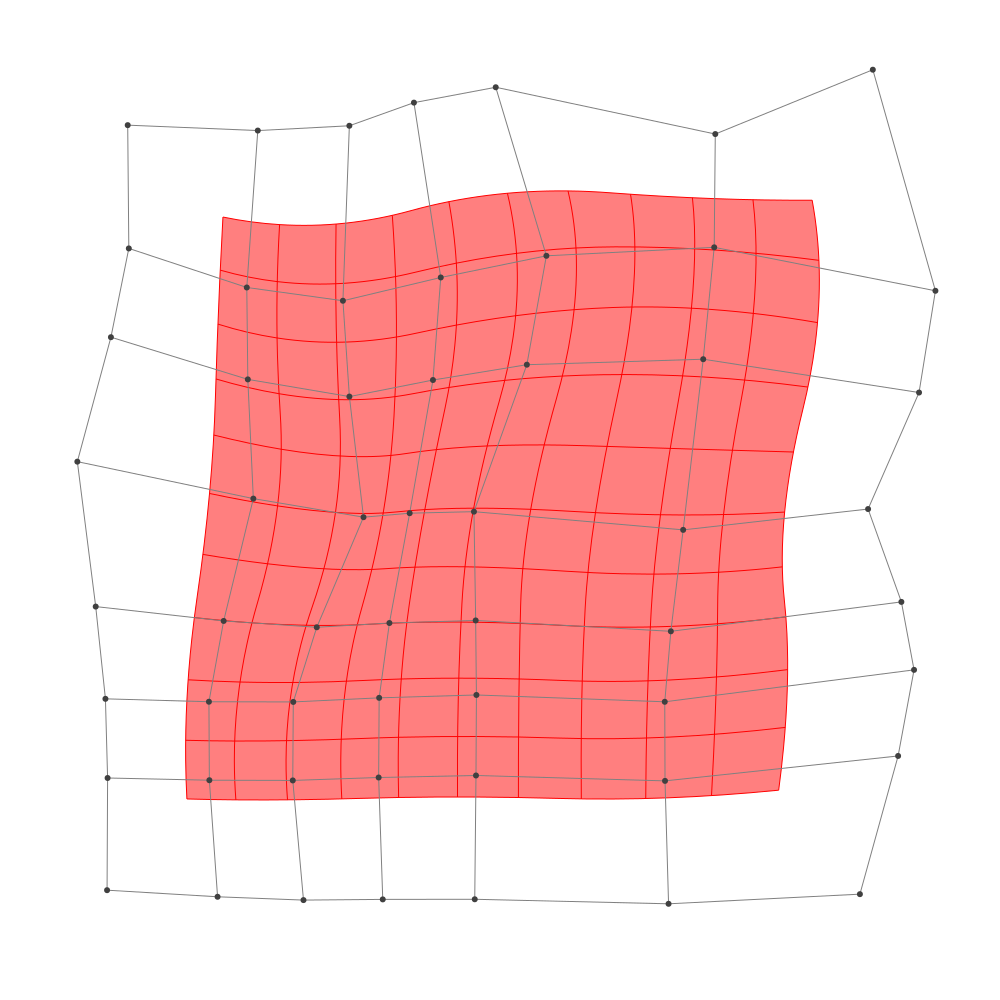
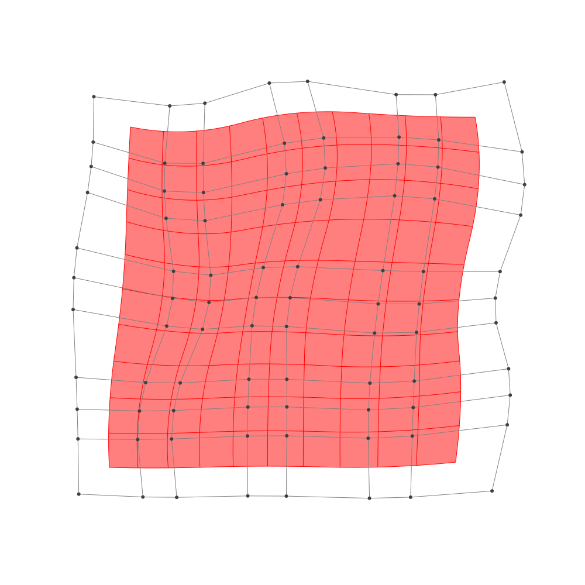

Refinement
BasicBSpline.refinement — FunctionRefinement of B-spline manifold with given B-spline spaces.
julia> p = 2 # degree of polynomial2julia> k = KnotVector(1:8) # knot vectorKnotVector([1, 2, 3, 4, 5, 6, 7, 8])julia> P = BSplineSpace{p}(k) # B-spline spaceBSplineSpace{2, Int64}(KnotVector([1, 2, 3, 4, 5, 6, 7, 8]))julia> rand_a = [SVector(rand(), rand()) for i in 1:dim(P), j in 1:dim(P)]5×5 Matrix{StaticArrays.SVector{2, Float64}}: [0.570682, 0.598151] [0.579503, 0.468012] … [0.777118, 0.248522] [0.270653, 0.496703] [0.0553152, 0.478766] [0.778336, 0.165203] [0.0321251, 0.512347] [0.0615877, 0.576942] [0.213378, 0.679397] [0.185626, 0.461998] [0.126513, 0.510717] [0.652873, 0.159513] [0.0990866, 0.558392] [0.735739, 0.861878] [0.228244, 0.802975]julia> a = [SVector(2*i-6.5, 2*j-6.5) for i in 1:dim(P), j in 1:dim(P)] + rand_a # random5×5 Matrix{StaticArrays.SVector{2, Float64}}: [-3.92932, -3.90185] [-3.9205, -2.03199] … [-3.72288, 3.74852] [-2.22935, -4.0033] [-2.44468, -2.02123] [-1.72166, 3.6652] [-0.467875, -3.98765] [-0.438412, -1.92306] [-0.286622, 4.1794] [1.68563, -4.038] [1.62651, -1.98928] [2.15287, 3.65951] [3.59909, -3.94161] [4.23574, -1.63812] [3.72824, 4.30297]julia> M = BSplineManifold(a,(P,P)) # Define B-spline manifoldBSplineManifold{2, (2, 2), StaticArrays.SVector{2, Float64}, Tuple{BSplineSpace{2, Int64}, BSplineSpace{2, Int64}}}((BSplineSpace{2, Int64}(KnotVector([1, 2, 3, 4, 5, 6, 7, 8])), BSplineSpace{2, Int64}(KnotVector([1, 2, 3, 4, 5, 6, 7, 8]))), StaticArrays.SVector{2, Float64}[[-3.9293180484782155, -3.9018494991431822] [-3.920497025302276, -2.0319883640099965] … [-3.7098857668591307, 2.2981648782181954] [-3.7228817770588227, 3.7485215824516542]; [-2.2293468411829513, -4.003296810010586] [-2.4446848424683, -2.0212338504253906] … [-1.927874483834843, 1.6059490119857427] [-1.7216641889896716, 3.665202570853765]; … ; [1.6856263189539509, -4.038001552065572] [1.6265126432546864, -1.989282988875865] … [2.1401677316287997, 2.3267605323828984] [2.1528728771862404, 3.659512660192855]; [3.599086636551816, -3.9416080058266827] [4.235739390626101, -1.638121508855388] … [4.464675424471562, 1.7019869807409174] [3.7282444622860322, 4.302974596316051]])
h-refinemnet
Insert additional knots to knot vector.
julia> k₊=(KnotVector(3.3,4.2),KnotVector(3.8,3.2,5.3)) # additional knotvectors(KnotVector([3.3, 4.2]), KnotVector([3.2, 3.8, 5.3]))julia> M_h = refinement(M,k₊=k₊) # refinement of B-spline manifoldBSplineManifold{2, (2, 2), StaticArrays.SVector{2, Float64}, Tuple{BSplineSpace{2, Float64}, BSplineSpace{2, Float64}}}((BSplineSpace{2, Float64}(KnotVector([1.0, 2.0, 3.0, 3.3, 4.0, 4.2, 5.0, 6.0, 7.0, 8.0])), BSplineSpace{2, Float64}(KnotVector([1.0, 2.0, 3.0, 3.2, 3.8, 4.0, 5.0, 5.3, 6.0, 7.0, 8.0]))), StaticArrays.SVector{2, Float64}[[-3.9293180484782155, -3.9018494991431822] [-3.924025434572652, -2.7799328180632705] … [-3.7118351683890847, 2.5157183838532142] [-3.7228817770588227, 3.7485215824516542]; [-2.824336763736294, -3.9677902512069947] [-2.906466169370633, -2.8021148585907993] … [-2.5321552196814237, 2.12514551412899] [-2.4220903448138746, 3.694364224913026]; … ; [1.6856263189539509, -4.038001552065572] [1.6501581135343923, -2.8087704141517476] … [2.142073503462416, 2.5266733515543915] [2.1528728771862404, 3.659512660192855]; [3.599086636551816, -3.9416080058266827] [3.981078288996387, -2.5595161076439057] … [4.354210780143733, 2.092135123077187] [3.7282444622860322, 4.302974596316051]])julia> save_png("2dim_h-refinement.png", M_h) # save image

Note that this shape and the last shape are identical.
p-refinemnet
Increase the polynomial degree of B-spline manifold.
julia> p₊=(1,2) # additional degrees(1, 2)julia> M_p = refinement(M,p₊=p₊) # refinement of B-spline manifoldBSplineManifold{2, (3, 4), StaticArrays.SVector{2, Float64}, Tuple{BSplineSpace{3, Int64}, BSplineSpace{4, Int64}}}((BSplineSpace{3, Int64}(KnotVector([1, 2, 3, 3, 4, 4, 5, 5, 6, 6, 7, 8])), BSplineSpace{4, Int64}(KnotVector([1, 2, 3, 3, 3, 4, 4, 4, 5, 5, 5, 6, 6, 6, 7, 8]))), StaticArrays.SVector{2, Float64}[[-3.653124217487576, -3.446617024485621] [-3.6673936246047107, -2.502336304881359] … [-3.40699929286147, 2.570755445514258] [-3.395230105874244, 3.346675202183868]; [-2.557169916700947, -3.4955482609885546] [-2.646158998638512, -2.513866933233623] … [-2.182457386671134, 2.21076101046505] [-2.0976194313356205, 3.1896463853461814]; … ; [2.0187482208693446, -3.499140989654099] [2.0471719188341737, -2.453551046910778] … [2.4995479623359964, 2.608662784385273] [2.443472526136136, 3.380725138937349]; [3.4103495042301804, -3.392417303197908] [3.670695345452858, -2.261904715860725] … [3.924363739607343, 2.403519664584815] [3.618576267493159, 3.598327181725284]])julia> save_png("2dim_p-refinement.png", M_p) # save image

Note that this shape and the last shape are identical.